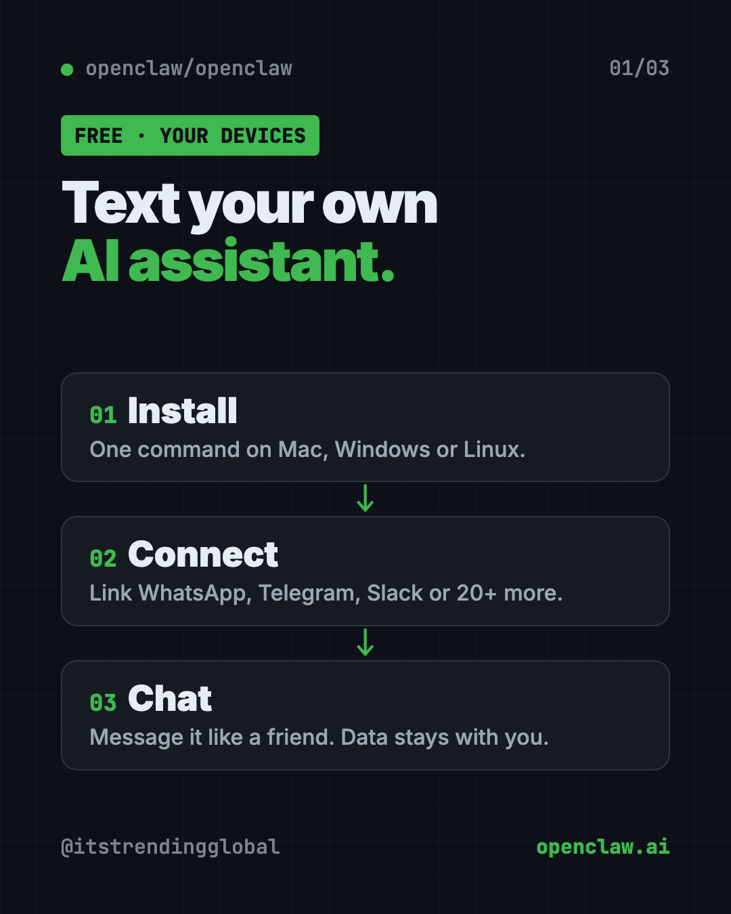
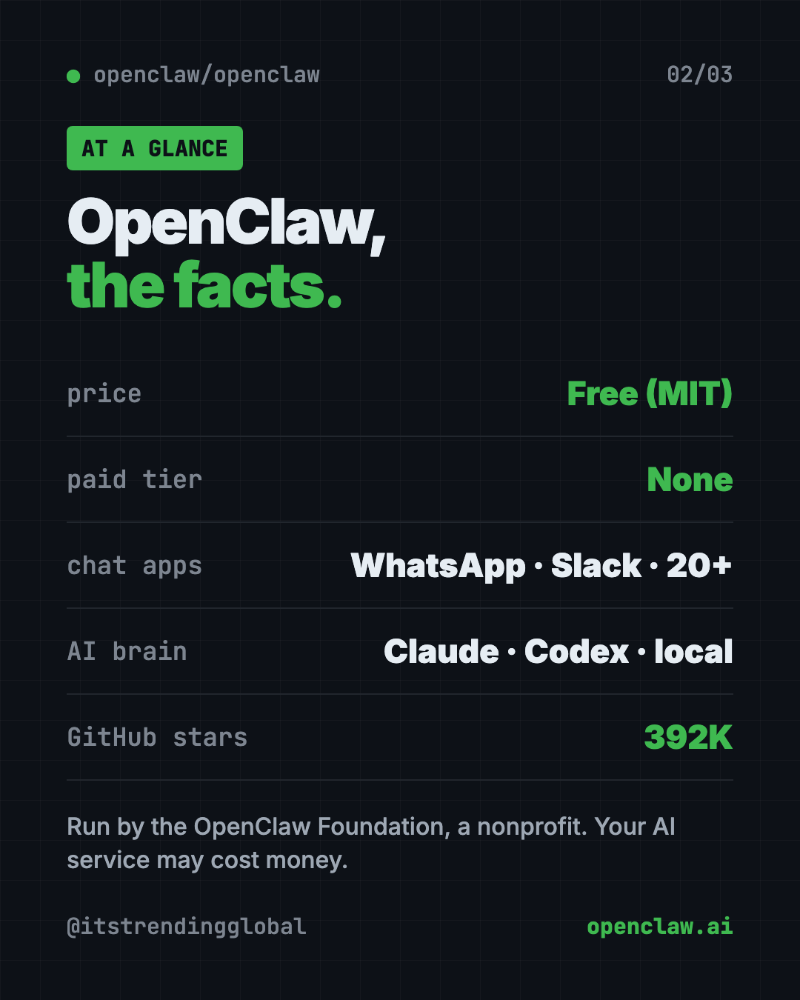
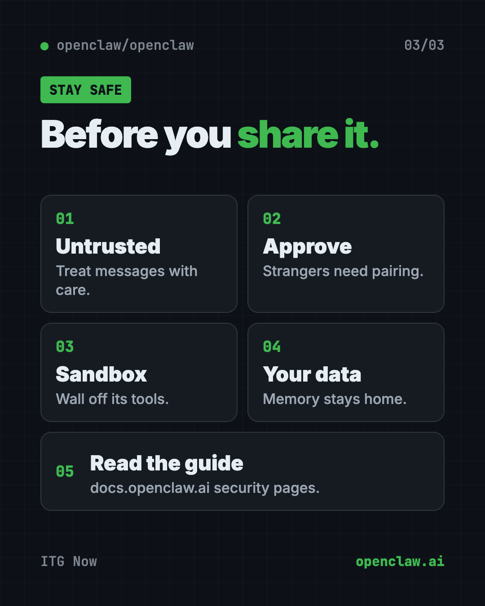

OpenClaw: Free AI Assistant for WhatsApp and Slack (2026)
- Published 15 Oct 2026
- Updated 16 Oct 2026
- 7 min read
- License MIT
- By the ITG Now team
OpenClaw is a free AI assistant for WhatsApp, Telegram, Slack, iMessage and 20+ other chat apps. It runs on your own computer, so you can text your AI like a friend while your data stays on your machine.
You probably use a few AI chat apps already. Each one lives in its own box, and most can only talk. OpenClaw moves your assistant into the apps you're already in all day. This guide covers what it does, real ways to use it, the exact install steps, and how to stay safe.
Key takeaways
- Free, with no catch. The README says there's "no paid tier, hosted service, or token." MIT license.
- Lives in your chats. Discord, iMessage, Slack, Teams, Telegram, WhatsApp and 20+ more.
- Runs on your hardware. Memory, settings and logins stay on your computer.
- Pick your AI brain. Claude, Codex or local models plug in, and you can swap them later.
- Run by a nonprofit. The OpenClaw Foundation, an independent 501(c)(3), looks after it.
What is OpenClaw?
OpenClaw is an open-source AI assistant. Open source means the code is public, so anyone can use it or check it.
The README sums it up: "Your assistant, on your devices, in your chats." It runs on your own computer and meets you in the messaging apps you already use. There are also apps for Mac, iPhone, Android, Windows and Linux.
It has about 392K stars on GitHub. Stars work like bookmarks, so a lot of people follow it.
OpenClaw doesn't come with its own AI brain. You plug one in, like Claude, Codex or a local model that runs fully on your computer. Then you can swap it without changing anything else.

How does OpenClaw work?
Here are the main parts from the README, in plain words:
- The Gateway. This is the assistant's home base on your computer. It keeps track of chats, tools and connections to each app.
- Channels. These connect your assistant to WhatsApp, Telegram, Slack, Discord, Google Chat, Signal, iMessage and more.
- The Control UI. A dashboard web page where you can see and message your assistant.
- Companion apps. On supported devices, these add voice, camera, screen and on-device actions.
- Skills and plugins. Add-ons that give it new abilities. You can find shared ones on ClawHub.
The same setup runs as a personal assistant on one laptop, or as a shared assistant for a team. The README says "configuration is the only difference."
How to use OpenClaw (real examples)
- Text your assistant on WhatsApp. Ask it to draft a reply, sum up a long message or plan your day, right inside the chat app you already use.
- A helper for your team's Slack. Run one shared assistant your whole team can ask questions.
- Switch apps without losing your helper. Message it on Telegram from your phone, then on Discord from your laptop.
- Add new skills. Browse ClawHub for add-ons that teach it new jobs.
- Use a private, local AI. Plug in a local model so your questions never leave your computer.
💡 Tip: Start with one chat app you use every day. Get that working well before you connect more.
Is OpenClaw free?
Yes. OpenClaw is free under the MIT license. The README says it has no paid tier, no hosted service and no token (no crypto coin).
The AI brain you plug in may cost money. Hosted AI services usually charge for use. A local model avoids that, but needs a capable computer.
OpenClaw at a glance
| Price | Free (the AI service you plug in may cost money) |
| Works offline | Only with a local AI model. Chat apps need internet |
| Platforms | Mac, Windows, Linux, plus iPhone and Android apps |
| Chat apps | WhatsApp, Telegram, Slack, Discord, iMessage, Signal, Teams and 20+ more |
| License | MIT (open source) |
| Run by | OpenClaw Foundation, a nonprofit |
| Best for | People who want to text their own private AI assistant |

How to install OpenClaw on Mac, Windows and Linux
You need a computer and an account with an AI provider, or a local model. The installer sets up Node.js (a program OpenClaw needs) for you if it's missing.
On a Mac, Linux or WSL2, open Terminal. Copy and paste this:
curl -fsSL https://openclaw.ai/install.sh | bash
On Windows, open PowerShell. Copy and paste this:
iwr -useb https://openclaw.ai/install.ps1 | iex
A setup wizard opens on its own. Follow it. It checks your AI account works, creates a workspace and sets up the Gateway.
When it's done, copy and paste this to check everything and open the dashboard:
openclaw gateway status
openclaw dashboard
Send a message in the dashboard to make sure your assistant answers. Then follow the getting started guide at docs.openclaw.ai to connect WhatsApp, Telegram or another app.
Already have Node.js?
You can install the package directly instead. The README says you need Node 24.16+ or 26.1+. Copy and paste this:
npm install -g openclaw@latest --allow-scripts=openclaw
openclaw onboard --install-daemon
On npm 11.15 or older, leave off --allow-scripts=openclaw.
Let Claude or Codex set it up for you
Claude Code and OpenAI Codex are AI helpers that can run setup steps on your computer. You paste a request, it does the steps, and you approve each one.
Copy and paste this:
Please help me install OpenClaw from github.com/openclaw/openclaw.
1. Check what computer I have (Mac, Windows or Linux).
2. Run the official install command from the README for my system.
3. Explain each step in plain words before you run it.
4. Walk me through the setup wizard and help me pick an AI provider.
5. Open the dashboard and send a test message.
Then try asking:
Help me connect OpenClaw to WhatsApp using the official docs.
Read the OpenClaw security guide and make sure strangers can't use my assistant.
Show me how to approve a new person who messaged my OpenClaw assistant.
Is OpenClaw safe?
OpenClaw can run tools directly on your computer. That's powerful, so the README is clear about safety.
- Treat incoming messages as untrusted. Anyone who can message your assistant could try to trick it.
- Strangers need approval. By default, unknown senders must be paired first. You approve with
openclaw pairing approve <channel> <code>. - Tools run on your computer unless you set up a sandbox, which is a walled-off safe space.
- Privacy. Your prompts go to the AI provider and chat apps you choose. OpenClaw itself only does a daily version check by default. Anonymous stats are opt-in.
⚠️ Heads up: Read the security and sandboxing guides before you let other people message your assistant, or open it to the internet.

Our take
OpenClaw is a strong pick if you want a free AI assistant for WhatsApp and your other chat apps, without handing your data to a new company. The nonprofit setup and "no paid tier" promise are reassuring.
What we like:
- Free, with no paid tier or crypto token.
- Works in 20+ chat apps you already use.
- Your memory and logins stay on your hardware.
- Swap AI models any time.
- Clear safety advice, with stranger approval on by default.
What to watch for:
- Setup uses the terminal and takes some time.
- The AI service you plug in may cost money.
- It can run tools on your computer, so set limits.
- Big project, lots of options. It can feel like a lot at first.
Want to compare? Hermes Agent is a free AI agent that learns and can import your OpenClaw setup. nanobot is a tiny personal assistant you run yourself. OpenClaw also led our best GitHub repos of January 2026.
FAQ
Is OpenClaw free?
Yes. OpenClaw is free and open source under the MIT license. The README says there's no paid tier, hosted service or token.
Can OpenClaw work in WhatsApp?
Yes. WhatsApp is one of its channels, along with Telegram, Slack, Discord, iMessage, Signal, Teams and 20+ more.
Does OpenClaw need the internet?
Your chat apps need the internet. With a local AI model, the thinking can stay on your own computer.
Is my data private with OpenClaw?
Memory, settings and logins stay on your hardware. Your messages go to the AI provider and chat apps you choose.
Who owns OpenClaw?
The OpenClaw Foundation, an independent nonprofit. Donors include Amazon, OpenAI and Red Hat, but the README says none of them own or direct it.
Get OpenClaw: github.com/openclaw/openclaw
Keep reading

net-merge: Combine Wi-Fi and Phone Internet, Free
net-merge is a free app to use two internet connections at once, like Wi-Fi plus a phone hotspot, on Windows, Mac and Linux. No account or VPN.

REA: Reverse Engineer Anything With Your AI Agent
REA (Reverse Engineer Anything) lets an AI agent look inside an app and explain how a feature works, with proof. What it does, what it misses, and the risks.

DBX: Free Database Client for 100+ Databases, With AI
DBX is a free database client that opens 100+ kinds of databases in a 25 MB app. Its AI helper turns plain English into database queries for you.